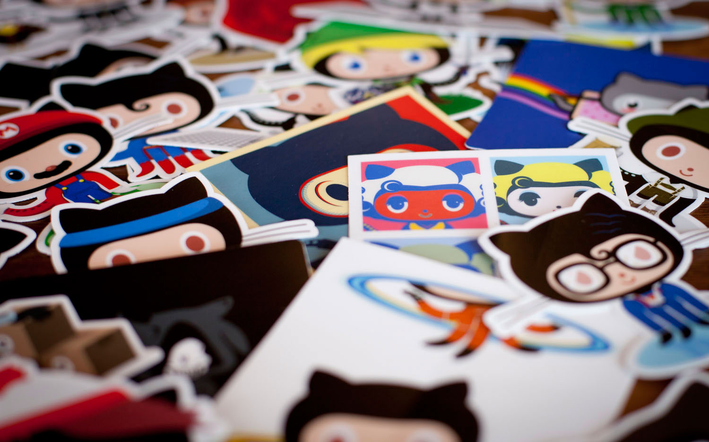

All About Github
Questions
Q. What is a version control system ?
A. A version control system (VCS) in GitHub refers to the underlying system used to track changes to files and manage collaborative development of software projects. GitHub primarily uses Git, which is a distributed version control system.
Q.What is Git?
A.Git is a distributed version control system (DVCS) that is widely used for tracking changes in source code during software development.
Q.What is Github?
A.GitHub is a web-based platform that provides hosting and collaboration services for software development using the Git version control system
Q.What is the difference between Git and Github?
A. The main difference is that Git is a distributed version control system used for tracking changes in source code on a local machine, while GitHub is a web-based platform that provides remote hosting, collaboration, and project management services for Git repositories.
Q.Who started Github and how was it started?
A. GitHub was founded by Tom Preston-Werner, Chris Wanstrath, and PJ Hyett. It started in April 2008 when Tom Preston-Werner had the idea for a platform that would simplify the way developers collaborate on open-source software. The founders wanted to create a more efficient and user-friendly platform for hosting Git repositories and facilitating collaboration among developers.
Q.What company owns it now?
A. It is now owned by Microsoft.
Q.How much does a Github account cost?
A. GitHub offers both free and paid plans. The cost of a GitHub account varies depending on the type of account:
1. GitHub Free: It's free.
2. GitHub Pro: The cost starts at $4 per month.
3. GitHub Team: The cost starts at $4 per user per month.
Q.What is the Octocat?
A. The Octocat is the official mascot of GitHub. It is a cute and friendly character that combines an octopus and a cat.
Git/Github terms:
Repository: A repository, often referred to as a "repo," is a container for your project. It includes all the project files and their complete history. GitHub allows you to create and store repositories for your code.
Commit: Developers make changes to the project files and create commits. A commit represents a set of changes (additions, deletions, modifications) to the project at a specific point in time. Each commit has a unique identifier, and a commit message that describes the changes made.
Fork: In GitHub, a "fork" refers to a copy of a repository. When you fork a repository, you create a duplicate of the original repository within your GitHub account.
Push: In the context of GitHub and Git, "push" refers to the action of uploading or sending your local code changes to a remote repository.
Pull requests: In GitHub, developers create pull requests to propose changes from one branch to another, typically from a feature branch to the main branch. Pull requests are where code reviews and discussions happen before merging.
Workflows: In GitHub, "workflows" typically refers to GitHub Actions, which is a powerful and flexible automation and CI/CD (Continuous Integration and Continuous Deployment) platform provided by GitHub.
Issues:In GitHub, "issues" refer to a feature that allows users to track, discuss, and manage tasks, bugs, feature requests, and other project-related items within a repository.
Raw button: The "Raw" button in GitHub is a feature that allows you to view the raw content of a file hosted in a GitHub repository.
Blame button:The "Blame" button in GitHub is a feature that allows you to view the detailed revision history of a specific file, showing who made each change to the file and when those changes were made.
